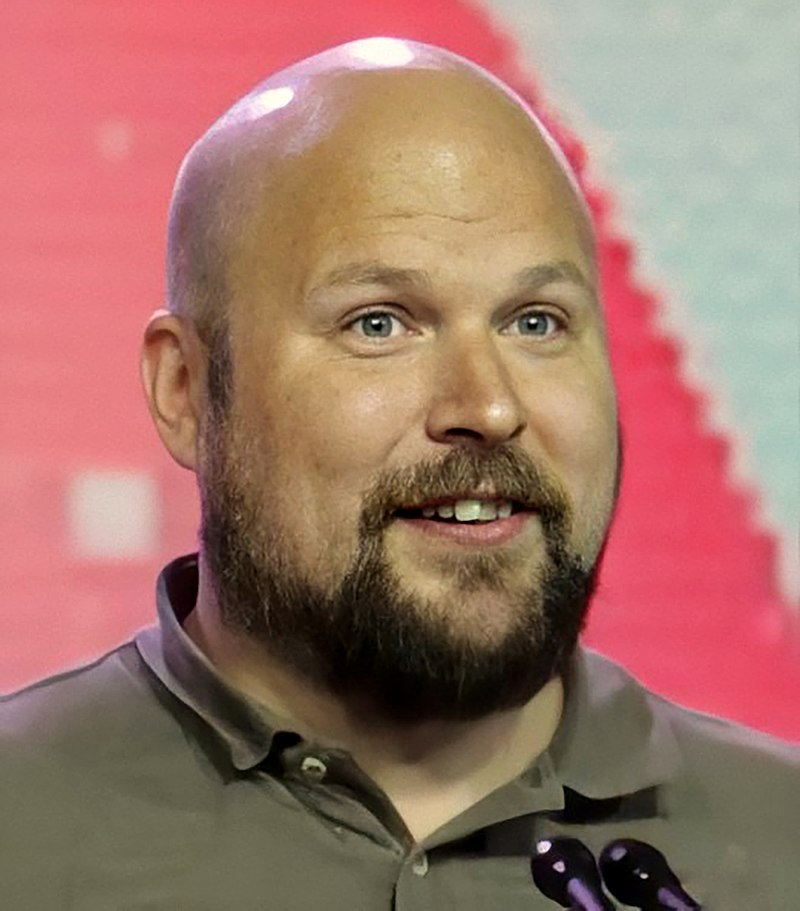
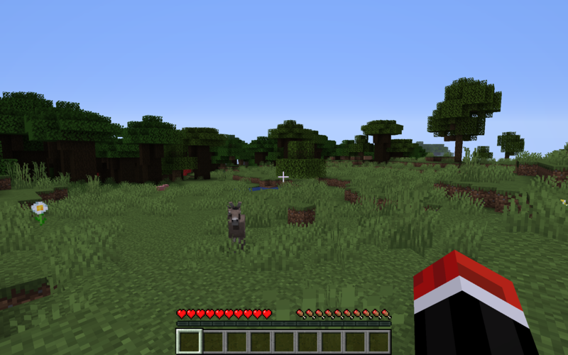
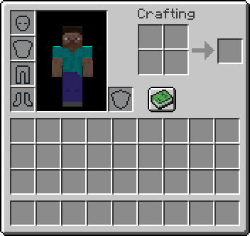
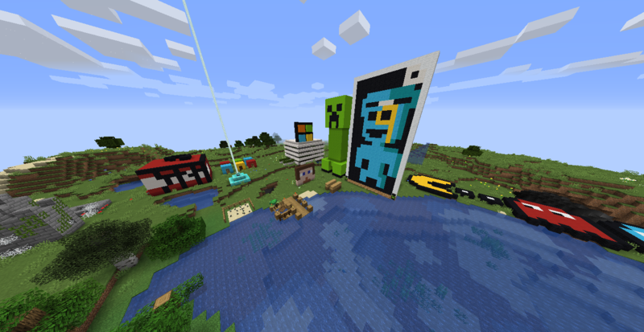
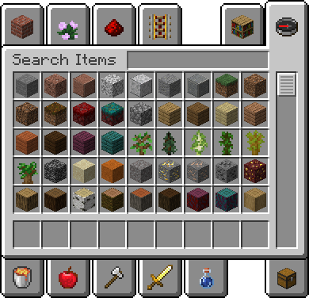
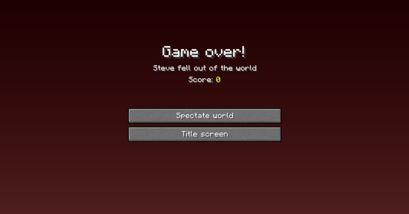

Minecraft es un videojuego de construcción sandbox (de mundo abierto) creado originalmente por el sueco Markus Persson (conocido comúnmente como "Notch"), y posteriormente desarrollado por su empresa, Mojang Studios. El juego implica que los jugadores interactúen con el mundo del juego colocando y rompiendo varios tipos de bloques en un entorno tridimensional. En este entorno, los jugadores pueden construir estructuras creativas, creaciones y obras de arte en servidores multijugador y mundos para un solo jugador en múltiples modos de juego.

Markus Persson en la GDC 2016, en la cuál obtuvo el Premio Pioneer
Al 8 de febrero de 2021, Minecraft tiene más de 131 millones de usuarios activos y vendió más de 217 millones de copias en todas las plataformas, lo que lo convierte en el videojuego más vendido de todos los tiempos y la novena franquicia de videojuegos más vendida de todos los tiempos.
El 15 de septiembre de 2014, fue adquirido por la empresa Microsoft por un valor de 2500 millones USD. Este suceso provocó el alejamiento de Markus Persson de la compañía
Jugabilidad
Minecraft es un juego de mundo abierto, por lo que no posee un objetivo específico, permitiéndole al jugador una gran libertad en cuanto a la elección de su forma de jugar. A pesar de ello, el juego posee un sistema de logros. El modo de juego predeterminado es en primera persona, aunque los jugadores tienen la posibilidad de cambiarlo a tercera persona. El juego se centra en la colocación y destrucción de bloques, siendo que este se compone de objetos tridimensionales cúbicos, colocados sobre un patrón de rejilla fija. Estos cubos o bloques representan principalmente distintos elementos de la naturaleza, como tierra, piedra, minerales, troncos, entre otros. Los jugadores son libres de desplazarse por su entorno y modificarlo mediante la creación, recolección y transporte de los bloques que componen al juego, los cuales solo pueden ser colocados respetando la rejilla fija del juego. Los jugadores crean «granjas» que son para conseguir un determinado material más fácil por ejemplo una granja de oro. En el juego se pueden encontrar estructuras especiales como aldeas, galerías mineras, templos marinos, pirámides y templos selváticos.
Inicio
Al inicio del juego, el jugador se encuentra en un mundo generado mediante un algoritmo, lo que permite que este sea teóricamente infinito y nunca se generen dos mundos iguales. El jugador es libre de desplazarse por el terreno, conformado por distintos biomas, entre los que se encuentran desiertos, sabanas, selvas, océanos, llanuras, tundras, etcétera. El juego posee su propio ciclo de tiempo de día y noche, siendo que un día en el juego equivale a 20 minutos en la realidad.
Mapeado
El mapeado no se genera por completo simultáneamente, sino que está dividido en chunks («trozos», «pedazos» traducido literalmente al español, pero sin adaptación oficial) de 16 × 16 bloques en horizontal. Los chunks cercanos al jugador se cargan en la memoria. A medida que este se desplaza, se generan y añaden nuevos chunks al mapa.
Dificultad
Independientemente de los varios modos de juego también se puede definir la dificultad del juego, siendo el modo más tranquilo el pacífico, que a diferencia de las demás dificultades, no permite que aparezcan monstruos en el juego que puedan interactuar con el jugador.
Modos de juego
Supervivencia
El modo de supervivencia (Survival en inglés) es uno de los principales modos de juego de Minecraft. Los jugadores deben recolectar recursos, construir estructuras, luchar contra mobs, comer y explorar el mundo en un esfuerzo por prosperar y sobrevivir.

Captura de pantalla del modo Supervivencia
Game-play
En Survival, los jugadores tienen un inventario que consta de cuatro filas de ranuras que se utilizan para almacenar elementos, nueve de los cuales se encuentran en la barra de acceso rápido. Todos los bloques requieren una cierta cantidad de tiempo para romperse, a diferencia del modo creativo, donde los bloques se pueden destruir instantáneamente. Estos elementos se pueden utilizar en recetas para crear herramientas que incluyen (pico, hacha, espada, azada, pala) y otros elementos. También se puede acceder más fácilmente a las recetas haciendo clic en el Libro de recetas en la esquina inferior izquierda. Este proceso se conoce como "craftear". La mayoría de las recetas de crafteo requieren una mesa de crafteo. Algunos artículos no se pueden obtener crafteando normalmente y requieren un horno para su procesamiento. Existen varias otras estaciones de elaboración para otros usos, como la elaboración de pociones, la reparación y el encantamiento.

Inventario del modo Supervivencia
En el modo Supervivencia, el jugador puede recibir daño del entorno (daño por caída, asfixia, lava y congelación) y de mobs hostiles (a menos que juegue en modo pacífico, donde los mobs hostiles están desactivadas). Un jugador que recibe suficiente daño muere y regresa al inicio del mundo, o a la cama del jugador si previamente durmió en una.
Objetivos
El jugador puede obtener un "final" en el modo Supervivencia al derrotar al Dragón Ender en la dimensión The End, pero esto no termina el juego; proporciona un objeto de trofeo (un huevo de dragón), una gran cantidad de experiencia, desbloquea una puerta de entrada para permitir un acceso más fácil a las islas del extremo exterior; un objetivo común es cumplir con todos los logros predefinidos (Avances en Java Edition). Los océanos también invitan a la exploración, ya que tienen corales, monumentos y criaturas adaptadas como guardianes y ahogados. El jugador también puede, opcionalmente, luchar contra el jefe Wither para obtener una estrella del Nether para que puedan crear un faro, que también completa todos los logros del juego. Un jugador puede buscar unas élitras y más después de encontrar una End Citie> en The End.
Modo Creativo
El modo creativo elimina los aspectos de supervivencia de Minecraft y permite a los jugadores crear y destruir estructuras y mecanismos fácilmente con la inclusión de un uso infinito de bloques y vuelo. También cambia parte de la música de fondo.

Pixel Arts y demás creaciones realizadas en modo Creativo
Game-play
En el modo Creativo, los jugadores no tienen barra de salud o hambre que obstaculice su construcción, ya que son invencibles (aunque todavía es posible comer). El modo creativo permite a los jugadores destruir todos los bloques al instante (incluidos los bloques normalmente indestructibles), siempre que no estén sosteniendo una espada, un tridente o un palo de depuración. Sin embargo, estos bloques no se eliminan y deben obtenerse mediante el inventario de creatividades. El modo creativo da a los jugadores la capacidad de volar.

Inventario del modo Creativo
Los jugadores en modo creativo no pueden recibir daño. Sin embargo, ir demasiado lejos en el vacío todavía mata al jugador, pero el jugador puede volar en el vacío siempre que no descienda por debajo de Y = -64. Esto, el comando /kill y los editores externos son la única forma de morir en el modo Creativo. [Solo en la Edición Java] Los jugadores creativos en la Edición Bedrock son completamente invulnerables, al igual que en el modo espectador.
Los mobs hostiles siguen apareciendo como lo hacen en otros modos de juego, a menos que el modo pacífico esté activo (incluso de los bloques de spawn), pero todos son pasivos hacia los jugadores y no atacan (incluso si miran al jugador de forma extraña). Si el jugador entra en The End mientras está en modo Creativo, el Dragón Ender aún intenta atacar al jugador, pero no puede causar ningún daño. [Solo en la Edición Java] Zombis convocados por otros que piden un intento de respaldo para atacar al jugador, pero aún causan ningún daño, y dejan de atacar después de varios segundos. El jugador aún puede encender Creepers con un mechero.
Hardcore
Hardcore es una variante exclusiva de la edición Java de Survival y uno de los modos de juego principales de Minecraft. En este modo, el mundo está bloqueado en dificultad Difícil y el jugador no puede reaparecer después de ser asesinado.

Pantalla de muerte en el modo Hardcore
Características
La característica clave del modo Hardcore es que el jugador no tiene la opción de reaparecer al morir como lo haría en otros modos de juego. En cambio, hay dos botones en la pantalla de la muerte: "Espectear mundo" y "Pantalla de inicio". "Espectear mundo" pone al jugador en el modo Espectador y reaparece en el punto de aparición del mundo, lo que le permite ver y explorar el mundo solo en ese modo. El botón "Pantalla de inicio" simplemente lleva al jugador a la pantalla del menú principal; reabrir el mundo simplemente devuelve al jugador a la misma pantalla de muerte que antes. Los Respawn Anchors no resucitan a los jugadores en el modo Hardcore.
Al crear un mundo en modo Hardcore, las opciones de mundo Habilitar trampas y Cofre de bonificación están bloqueadas en APAGADO. En el menú de selección de mundos, los mundos del modo hardcore muestran un texto rojo oscuro que dice "¡Modo Hardcore!"